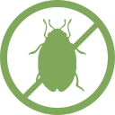

Используя препараты Stoller, например,
Stimulate Yield Enhancer
для предпосевной обработки, вы обеспечите:
-
Быстрое проростание симян

-
Одновременные и однородные всходы
-
Формирование массивной коревой системы
-
Защита от вредителей и болезней
-
Стрессоустойчивость растений
-
Образование клубеньков на корневой системе бобовых